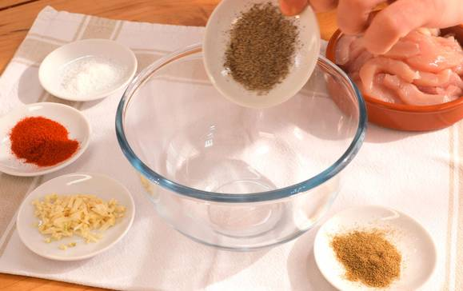
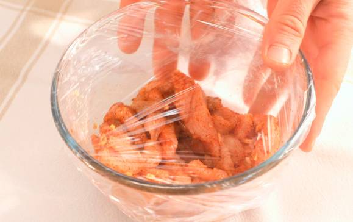
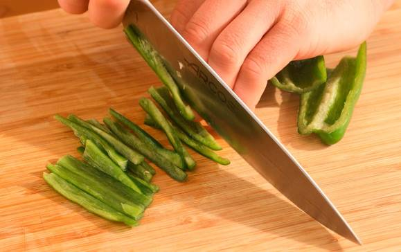
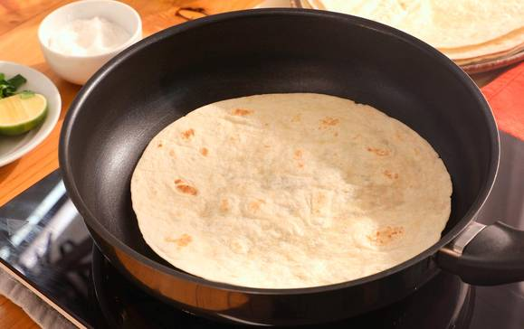
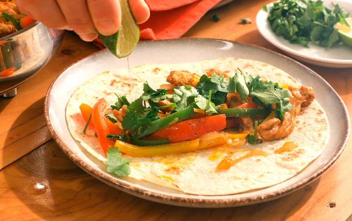
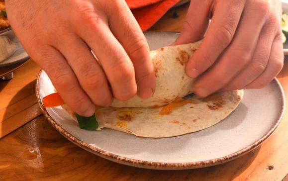

Volver a la pagina principal
Fajitas mejicanas de pollo
Ingredientes
- 8 tortillas de trigo
- 500 gramos de pechugas de pollo
- 1 pimiento rojo
- 1 pimiento amarillo
- 1 cebolla
Pasos a seguir
- Pon en un bol la pimienta, el comino, la sal, el pimentón, el ajo y el pollo cortado en tiras.

- Mezcla todo bien y tapa el bol con papel film. Deja reposar 1 hora.

- Pela y corta la cebolla en juliana. Lava los pimientos y córtalos en tiras. Pica elperejil.

- En una cazuela con aceite de oliva añade la cebolla, una pizca de sal, el pimiento rojo, el pimiento verde y el pimiento amarillo. Remueve y rehoga unos minutos. Incorpora el pollo, remueve y saltea unos minutos.
- Pon una sartén al fuego y calienta las tortillas de trigo por los dos lados y de una en una. Después, deja las tortillas envueltas en un paño limpio para que se mantengan calientes.

- Para montar las fajitas, extiende una tortilla de trigo y pon encima un poco del salteado de pollo y verduras. Añade un poco de zumo de lima y cilantro fresco picado al gusto.

- Enrolla la fajita.

- Sirve las fajitas mexicanas de pollo con verduras.
Resultado Final